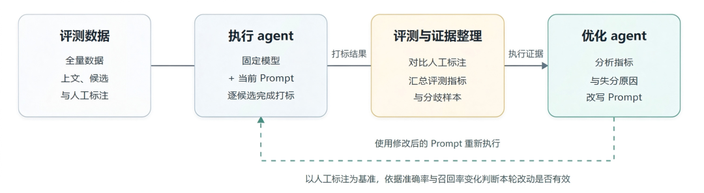
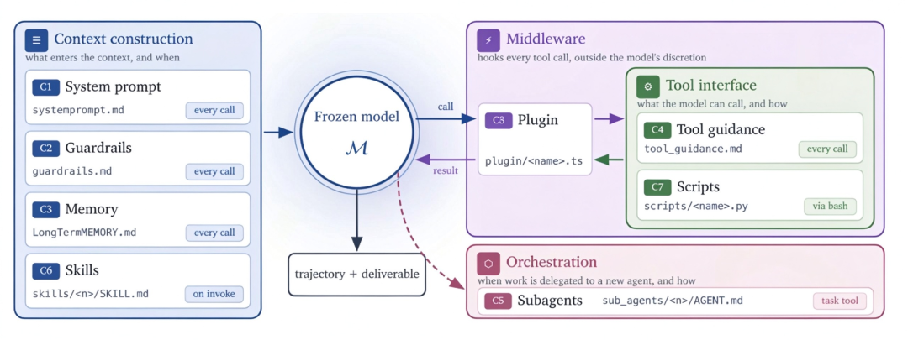
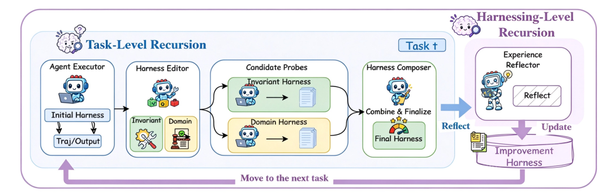
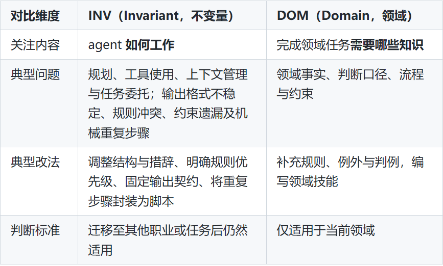
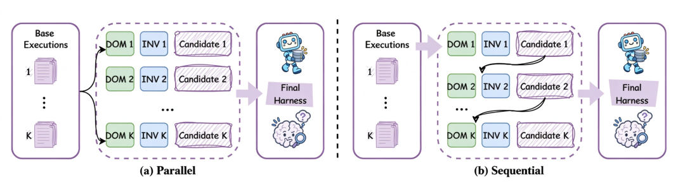
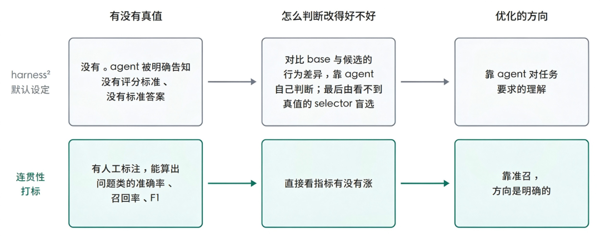
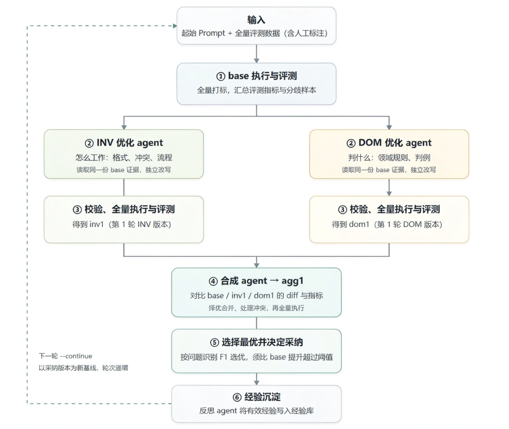
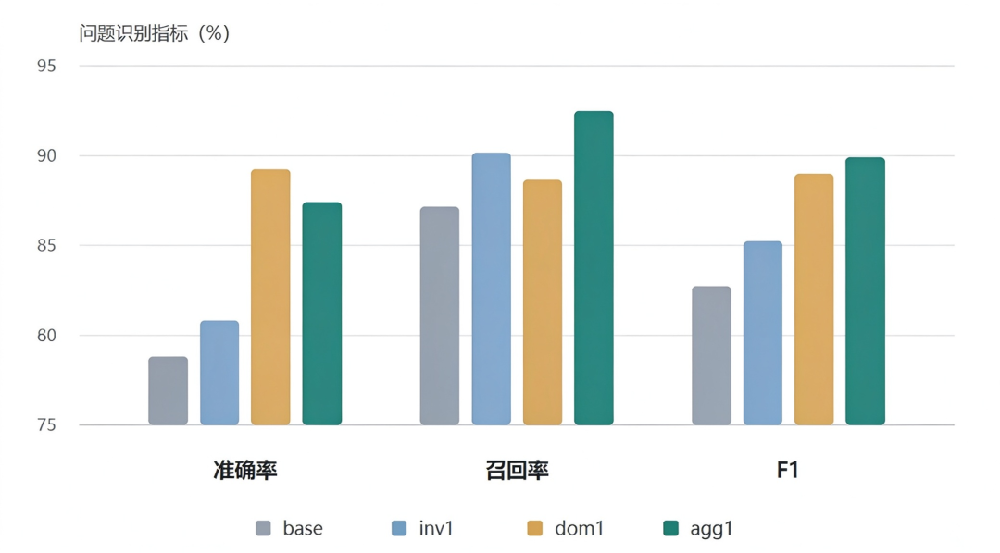
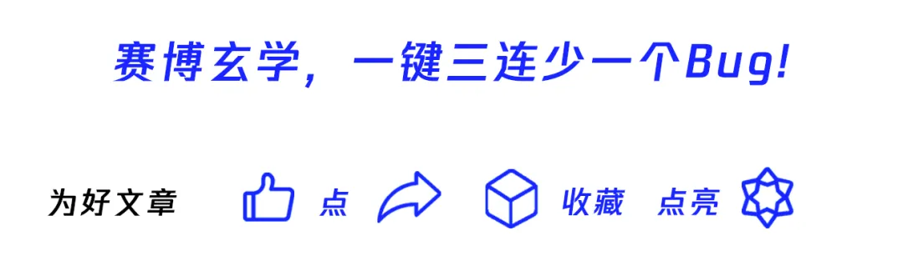

维护3.3万字符的长Prompt？让优化Agent迭代执行Agent
来源：微信公众号 归档日期：2026-11-21 抓取状态：成功 原文字符：15100｜配图：18 张
摘要速览
- 腾讯云开发者：记录如何借助 Google Research 开源 harness²（Recursive Agent Harnessing）框架，让“优化 agent”自动迭代负责打标的“执行 agent”，针对有人工标注、可量化准召的连贯性打标任务做适配。背景是手工调超过 3.3 万字符、由历史规则逐步累积的长 Prompt 重复费人且难持续；在 611 条数据上跑 1 轮（约 95 分钟，无人工介入），问题类 F1 从 82.78% 提升到 89.89%。
核心内容
（待补充）
可执行启发
（待补充）
我的想法
（待补充）
原文沉淀
目录
- 01
- 1.1 任务背景：连贯性打标
- 1.2 此前实践：基于 Skill 构建自我迭代闭环
- 02
- 2.1 方法与工具：harness²，让 agent 迭代自己的"外壳"
- 2.1.1 背景
- 2.1.2 运行机制
- 2.1.3 适用场景
- 2.1.4 与此前 Skill 实践的区别
- 2.2 适配：将 harness² 应用于具有真值的打标任务
- 2.2.2 难点二：执行 agent 的形态不同，需要重写执行环节
- 2.2.3 难点三（核心）：通用 agent 任务与可量化评估任务存在本质差异
- 2.2.4 适配后的 harness² 如何运转
- 03
- 3.1 整体结果
- 3.2 INV 与 DOM 各自的贡献
- 04
- 参考资料
关注腾讯云开发者，一手技术干货提前解锁👇


开发者公众号专属群聊
扫码加入获取更多一手教程、科技前沿报告
手工调 Prompt 是个重复、费人、又难以持续的活。这篇文章记录我们如何借助 Google Research 开源的 harness²（Recursive Agent Harnessing）框架，让一个"优化 agent"自动迭代负责打标的"执行 agent"，并针对有人工标注、可量化准召的连贯性打标任务做了适配。在 611 条数据上跑 1 轮（约 95 分钟，无人工介入），问题类 F1 从 82.78% 提升到 89.89%。
01
背景
本章要点：本次优化对象是一份超过三万字符、由历史规则逐步累积而成的 Prompt。此前，我们已基于 Skill 构建自我迭代闭环；流程虽然能够完整运行，但连续迭代 5 个版本后，准确率和召回率仍未显著提升。其核心问题在于改进过程缺乏清晰的组织方式。
1.1 任务背景：连贯性打标
在输入法联想场景中，系统根据用户输入的上文生成若干联想候选。我们使用一个 LLM 节点，依据一份长 Prompt（超过三万字符，由历史规则逐步累积而成），逐一评估每个候选的连贯性，再与人工标注进行对比，以候选为单位统计准确率和召回率。问题识别是本任务的核心目标：问题样本占比约 6%，但会直接影响用户体验，因此需要重点关注其识别准确率、召回率和 F1。
本实践包含两类 agent，二者职责如下：
- 执行 agent：使用固定模型和当前 Prompt 完成候选打标，是被优化的对象。
- 优化 agent：读取执行 agent 的指标与失分样本，分析原因并改写 Prompt，负责推动迭代。

图 1 执行 agent 与优化 agent 的自动迭代闭环
本实践的核心是让优化 agent 自主完成“发现问题—修改 Prompt—执行验证”的闭环，减少人工在各个环节之间的传递与协调。
1.2 此前实践：基于 Skill 构建自我迭代闭环
在引入 harness² 之前，我们已基于 Skill 构建一套完整的自我迭代闭环：由 agent 读取打标结果和人工标注，分析失分样本并改写 Prompt，随后重新执行评测。该流程能够完整运行，但实际效果有限：连续迭代 5 个版本后，准确率和召回率仍未显著提升。
复盘发现，瓶颈不在于能否形成闭环，而在于闭环内的改进过程缺乏有效组织。此前的 Skill 仅为 agent 提供“提升准确率和召回率”这一笼统目标。同一 agent 需要同时处理输出格式不稳定、规则优先级冲突、特定判例缺少规则等性质不同的问题。由于缺乏明确的改动边界，各版本往往同时调整多个方面，因而难以定位收益与回退的具体来源。
下一章介绍的 harness²，为组织这一改进过程提供了更体系化的方法。
02
过程与方法
2.1 方法与工具：harness²，让 agent 迭代自己的"外壳"
节要点：harness² [2]将改进拆分为 INV（怎么工作）和 DOM（需要知道什么）两个视角，并行生成提案，再依据执行证据进行合并，同时将经验沉淀到可选择性复用的经验库中。k=1 时，一轮流程包括 base、提案、探测与合成。
2.1.1 背景
LLM agent 的表现不仅取决于底层模型，也受到其外部运行配置 harness 的影响，包括系统提示词、记忆、技能、工具说明、脚本和子 agent 编排等，可概括为 Agent = Model + Harness。同一模型采用不同的 harness 时，表现可能存在明显差异。harness² 将 harness 拆分为 8 个可编辑组件，每个组件在运行时对应一个文件：

图 2 harness² 的 8 个可编辑组件（图源：论文 [1] Figure 2）
手工调整 harness 需要持续投入工程精力，为降低这一成本，出现了“让 AI 自主改进 harness”的思路，即递归自我改进（RSI）。早期方法（如 Meta-Harness [4] ）在一批训练任务上离线搜索最优 harness，并在部署后保持固定。然而，真实场景中的任务持续出现且通常包含未见任务，同时往往缺乏标准答案。论文 [1] 指出的两个难点正在于此：
- 任务缺乏真值或可靠的验证器，难以可靠判断修改后的 harness 是否优于原版本；
- 针对单个任务形成的改进，难以自动沉淀并迁移到后续任务。
harness² 通过两层递归回应上述问题：任务级递归用于改进当前任务的 harness，harness 级递归用于沉淀和复用改进经验。
2.1.2 运行机制

图 3 harness² 整体流程（图源：论文 [1] Figure 3；左侧为任务级递归，右侧为 harness 级递归）
任务级递归：Propose、Probe、Compose 三步。
** **
base 执行。 使用当前 harness 执行一次任务，获得“参考执行”。该结果仅用于描述当前 harness 的行为，并不代表其输出正确。
Propose（提案）。 两个编辑器基于参考执行，分别生成 INV 和 DOM 两版候选 harness，且两路无法查看彼此的改动。
- Probe（探测）。 每个候选 harness 在相同的模型和环境下重新执行，并与参考执行进行对比，形成“行为对比”：目标问题是否缓解、行为是否保持不变，以及是否出现回退。需要强调的是，这些对比仅作为后续决策的证据，并不等同于正确性验证。
- Compose（合成）。 合成 agent 读取参考执行、两个候选、它们相对当前版本的 diff 以及全部执行证据，有选择地合并有证据支持的改动、修订相互冲突的改动、仅采纳其中一路，或保持原样。每项决策均需对应具体的执行观察，而非仅基于“预期指标提升”的假设。合成后的 harness 再执行一次，得到本轮最终结果。
INV 与 DOM 的分工是该方法的关键设计：

两路分别聚焦“工作方式”与“领域知识”，再由合成阶段整合双方收益。与单一 agent 同时处理两类问题相比，这种分工更加聚焦，也能减少改动之间的相互干扰（论文的消融结果见 2.1.3）。
此外，预算参数 k 用于控制探索宽度（图 4）：并行模式为 INV/DOM 候选增加 k 个独立合成会话，并最终选择一个结果；串行模式则将 k 个对比步骤依次衔接，后一步基于前一步继续修改。k=1 时两种模式等价，均对应上述基本流程。本文实践均采用 k=1。

图 4 并行与串行递归（图源：论文 [1] Figure 4）
harness 级递归：经验沉淀。 任务结束后，反思 agent 会复盘完整的改进记录，包括参考执行、候选、行为对比、合成决策与最终结果，并提炼各项改动解决的缺陷、适用条件及实际影响。只有获得行为对比支撑的经验才会保留。这些经验连同被采纳的 harness 一起写入改进经验库（每条包含一个可执行的 harness 和一份 EXPERIENCE.md，另附索引）。下一个任务仍从同一个初始 harness 出发，但在提案和合成阶段可以按需读取经验库并有选择地复用，而非自动继承。这体现了“递归”的第二层含义：改进对象不仅是执行 harness，改进机制本身也会随着经验积累持续完善。
2.1.3 适用场景
harness² 适用于以下场景：模型保持固定且不进行微调，能力主要由 Prompt、脚本和技能等外部配置决定；任务可以自动执行并留下可对比的轨迹与产物；任务持续出现，且缺乏现成的验证器或验证器成本较高。软件开发、办公文档与法律文书等通用 agent 任务，是论文验证的典型对象。
论文在 3 个专业基准和 4 种执行配置上进行了验证。仅执行一步对比改进（k=1）即可稳定提升指标，最高在 WorkBuddy-Bench 上提升 11.5 分、JobBench 上提升 4.5 分、LAB 上提升 11.8 个百分点；随着预算增加，指标进一步改善。消融实验也表明三项设计各有贡献：移除 INV/DOM 分路后，WorkBuddy-Bench / JobBench 分别下降 2.9 / 3.7 分；移除合成后，分别下降 1.6 / 1.9 分；移除经验库后，分别下降 3.1 / 1.8 分。
需要说明的是，论文以“没有真值”为基本设定，而本任务具有人工标注和可量化的准确率、召回率。这一差异决定了后续的适配取舍（见 2.2.3）。
2.1.4 与此前 Skill 实践的区别
针对 1.2 节所述问题，harness² 与此前的 Skill 实践主要有以下两点差异：
1. 体系化的 Propose、Probe、Compose，尤其是 Propose 阶段的视角拆分。 harness² 将改进过程拆分为两个视角，而非由单一 agent 负责全部修改：INV 仅关注 workflow（agent 如何工作，包括输出格式、规则冲突与流程），DOM 仅关注领域知识（如何判定，包括规则、例外与判例）。两路彼此独立，无法查看对方的改动；每路改动先单独执行一次（Probe），留下可对比的证据；最后由 Compose 依据这些证据进行合并。这种“分视角提案、依证据合并”的方式，使每路改动更加聚焦、可追溯，并减少两类改动之间的相互干扰。
相比之下，此前的 Skill 仅以准确率和召回率为整体目标，缺乏上述分工。这是其连续迭代 5 个版本仍未显著提升，而 harness² 单轮即取得明显改善的关键差异（两路的具体收益见第三章）。
2. 可沉淀、可选择性复用的经验。 每轮结束后，harness² 会复盘全部改动，将有执行证据支撑的经验和被采纳的 harness 存入经验库；后续任务可以按需读取、有选择地复用，而非自动继承上一版。这种机制使改进方法能够随任务积累持续完善，避免每轮从零开始。此前的 Skill 未包含这一机制，各轮改进彼此孤立。
在本任务中，两层 harness 分别对应：执行 harness 为当前 Prompt 及可选脚本；改进 harness 为优化 agent 使用的任务说明与经验库。前者在每轮迭代中被修改，后者随经验积累持续完善。
2.2 适配：将 harness² 应用于具有真值的打标任务
节要点：harness² 面向通用 agent 任务，而本任务在 harness 抽象与存量 Prompt 的映射、执行环节形态以及真值可用性三个方面，均与其默认设定存在差异。基于其开源实现 [3]，我们在不修改框架本体的前提下增加约 2400 行适配层，仅在运行时覆盖与“无真值”相关的通用声明。其中，真值可用性的适配是核心。
2.2.1 难点一：将 harness 抽象映射到具体任务，调整通用约束以适配存量 Prompt
问题： harness² 将 harness 拆分为 8 个可编辑组件，而本任务执行侧实际生效的仅有 Prompt 和少量脚本，对 skills、子 agent 或插件的修改不会影响执行结果。与此同时，优化对象是一份超过三万字符、由历史规则累积而成的存量 Prompt，框架的默认约束并不完全适用：
- 可编辑范围过宽，导致优化 agent 可能生成不会影响执行结果的文件改动；
- 框架对每次加载的常驻内容（系统提示词等）设置了 24000 字符上限，以避免内容无限膨胀；然而，本任务的 Prompt 本身就是执行 agent 的系统提示词，初始长度约为 3.3 万字符，已经超过该上限；
- 面对长 Prompt，优化 agent 可能出于结构性整理的目的进行大幅精简或重写，导致用于修复历史问题的规则失效。
** **
方案： 根据存量 Prompt 的特点，逐项调整通用框架约束：
- 限定并校验可编辑范围。仅允许修改 Prompt 本体和少量配套文件。若候选包含其他文件改动，校验环节将拒绝该候选，并将原因反馈给优化 agent 重试；**
**
- 放宽常驻内容上限。将上限由 24000 调整至 50000 字符，为新增规则保留空间，并在优化 agent 的任务说明中注明当前 Prompt 长度；**
**
- 约束优化方式。将以下要求写入任务说明：采用小步修改，每轮仅处理失分最集中的若干类别；不得出于“整洁”目的大幅精简；规则冲突时应明确优先级和适用例外，而非直接删除其中一条；不得改变模型输出结构，以确保下游能够正常解析结果。
2.2.2 难点二：执行 agent 的形态不同，需要重写执行环节
问题： harness² 中的“执行”是启动一个 agent 在沙箱中完成长任务，并收集其轨迹与产物；本任务的“执行”则是对评测集中的 611 条数据逐条进行单轮打标，再计算评测指标。
方案： 不沿用原框架的执行 agent，而是整体重写该环节：
- 执行流程重写。将 harness 中实际生效的文件组合为 system prompt，并发调用模型完成全量数据打标，再沿用原有打标 workflow 完成结果解析、diff 与评测。最终产出指标和逐条预测，以替代 agent 轨迹；
- 并发与保护。为同一模型设置全局并发上限，以约束 INV 和 DOM 两路并行探测的总负载；正式执行前先使用少量数据进行冒烟测试，若出现大面积失败则立即中止，避免继续执行后续优化。
2.2.3 难点三（核心）：通用 agent 任务与可量化评估任务存在本质差异
问题： harness² 默认任务没有真值，agent 会收到“没有评分标准、没有标准答案”的明确说明，只能通过对比 base 与候选的行为差异评估改动，最终由无法访问真值的 selector 进行选择。本任务则具有人工标注，可以直接计算准确率、召回率和 F1，因而能够为优化提供明确方向。

图 5 harness² 默认设定与连贯性打标任务的对照
真值提供了比默认设定更明确的反馈信号，但必须将其完整、准确地传递给优化 agent，否则优化仍只能依赖模型直觉。
方案： 围绕真值的使用，从以下四个方面进行改造：
** **
① 将真值与评测指标纳入执行证据。 每轮执行后，harness² 会向优化 agent 提供一份“轨迹”，我们将其改造成两部分：
- 汇总指标：问题识别的准确率、召回率、F1，以及因输出格式问题被丢弃的记录数；
- 分歧样本：逐条列出模型与人工标注不一致的样本，并区分漏判（降低召回率）、误判（降低准确率）和输出格式异常。每条样本包含上下文、人工标注、模型标注及模型生成的判断依据，优化 agent 据此分析模型的误判原因。
** **
② 为优化 agent 编写专用任务说明。 框架允许为优化 agent 附加项目说明，主要包含以下三类内容：
- 评测口径：明确准确率和召回率的计算方法，以及判定优化有效的标准；
- 工作方法：先汇总失分点并按原因聚类，再结合模型判断依据分析根因，最后在 Prompt 中定位并修改对应规则；
- 约束与节奏：遵循 2.2.1 节所述改动原则，并及时开展文件修改，避免长时间停留在推理阶段。此前测试中曾出现 agent 因长时间只推理、不修改文件而被上游中断，导致本轮改动被框架丢弃。
需要特别注意的是，输出格式异常的记录会被整条丢弃且不参与评分，因此输出格式稳定性会直接影响评测结果。我们在任务说明中明确这一点，使优化 agent 将格式问题纳入优化目标（第三章中 inv1 的部分收益即来源于此）。
③ 基于指标进行选择与采纳。 官方 selector 无法访问真值，只能依据规则和源材料进行推断。由于人工标注口径与模型直觉可能存在分歧，仅依赖上述间接信息进行选择并不可靠。因此，我们改为按问题识别 F1 在 base、inv1、dom1、agg1 四个版本中选择最优版本，仅当其相对 base 的提升超过设定阈值时才采纳，否则保留原 Prompt。
版本命名中，base 表示未优化的基线；inv 和 dom 分别对应 INV（怎么工作）与 DOM（需要知道什么）两条优化路径；agg 是 aggregate 的缩写，表示两路改动的合成；末尾数字表示迭代轮次。因此，inv1、dom1 和 agg1 分别指第 1 轮的 INV 候选、DOM 候选和合成版本。
④ 防止优化 agent 过拟合评测集。 由于优化 agent 可以访问人工标注，直接将评测样本原文写入 Prompt 可能形成表面上的指标提升。为避免这一问题，我们在候选 Prompt 执行前增加校验：保护起始 Prompt 中已有示例，不允许删改；新增示例不得与评测集样本完全一致。未通过校验的候选将被拒绝，并反馈原因供优化 agent 重试。
2.2.4 适配后的 harness² 如何运转

图 6 适配后的 harness² 单轮流程：双路并行提案、全量验证、合成择优与经验沉淀
单轮（k=1）流程如下：
- base 执行。 使用当前 Prompt 对全量数据执行一次打标，完成评测并整理执行证据。
- INV、DOM 两路并行优化。 两个优化 agent 读取同一份证据，且无法查看彼此的改动，分别改写 Prompt。INV 路径侧重输出格式稳定性、规则冲突与优先级、措辞与位置；DOM 路径侧重针对集中出现的错误类别补充规则与例外，并修正表述不准确的规则。
- 校验与探测。 两个候选分别通过校验后，各自在全量数据上重新执行，获得 inv1 和 dom1 的评测指标。
- 合成。 合成 agent 对比 base、inv1、dom1 的 diff 与指标，择优合并并生成 agg1，随后进行全量执行。若两路改动涉及同一规则且存在冲突，合成 agent 将按既定裁决顺序重写。
- 选择与采纳。按问题识别 F1 在四个版本中选择最优版本，仅当其相对 base 的提升超过阈值时才采纳。
- 经验沉淀。反思 agent 复盘整轮改动，将有执行证据支撑的经验写入经验库。
每轮需要 4 次全量执行（base、inv1、dom1、agg1，共约 2400 次打标调用）和 4 次优化 agent 调用（INV、DOM、合成、经验反思），单次优化调用约 10—20 分钟。轮次结束后，系统自动生成结果报告，包含各版本的完整指标和 Prompt 改动清单。若需在已采纳版本上继续迭代，可通过 --continue 启动下一轮：系统将上次采纳版本作为新基线，递增轮次编号，并保留历史结果与经验库。
03
成效
本章要点：在包含 611 条数据的评测集上完成 1 轮迭代后，问题识别 F1 由 82.78% 提升至 89.89%。四个版本的结果体现了 INV 与 DOM 的分工：INV 主要改善召回率，DOM 主要改善准确率，合成版本则整合两路收益。
3.1 整体结果
本次实验在包含 611 条数据的评测集上完成了 1 轮迭代，整轮耗时约 95 分钟。执行 agent 采用 DeepSeek V4 Pro 模型 [5]，实验过程中的模型调用均通过 CodeBuddy [6] 完成。最终评测结果如下图所示：

图 7 611 条评测数据的问题识别指标对比
最终版本 agg1 实现了准确率、召回率和 F1 的同步提升。 相比 base，问题识别准确率由 78.84% 提升至 87.43%，提高 8.59 个百分点；召回率由 87.13% 提升至 92.49%，提高 5.36 个百分点；F1 由 82.78% 提升至 89.89%，提高 7.11 个百分点。这表明合成版本既减少了误判，也进一步降低了漏判，综合效果优于任一单路优化版本。
3.2 INV 与 DOM 各自的贡献
- inv1（仅调整“怎么做”）：召回率由 87.13% 提升至 90.17%。 优化 agent 在 base 的失分样本中发现了一类典型的“工作方式”问题：Prompt 正文明确禁止使用代码块围栏，但其内置输出样例却包含围栏。由于模型倾向于模仿样例，原本合法的 JSON 因包含围栏而无法解析，导致整条记录被丢弃。inv1 将输出样例修改为裸 JSON，并在样例处重申该约束；同时新增“输出前核对段数”的要求，以减少候选并段、漏段造成的数量不一致。修改后，无输出记录由 6 条降至 0 条，数量不符记录由 6 条降至 1 条，因格式问题被丢弃的记录减少，召回率随之提升。
- dom1（仅调整“判什么”）：准确率由 78.84% 提升至 89.24%。 DOM 针对失分较集中的误判类别补充了判例、规则和例外，模型判为问题但被人工标注否定的样本由 base 的 40 个降至 17 个。然而，该路径未处理格式问题，代码块围栏问题反而加重：无输出记录增至 28 条，另有 9 条数量不符，共 37 条记录被丢弃。由于有效评分样本减少，准确率提升中包含一定的虚高成分；召回率仅小幅提升至 88.68%。
- agg1（合成版本）：F1 最高，准确率为 87.43%，召回率为 92.49%。 合成 agent 以 base 为基础，保留 inv1 的全部改动，并整合 dom1 的领域规则。两路改动在同一规则上存在冲突：inv1 已定义“冲突裁决顺序”，合成阶段据此重写 dom1 补丁中与旧规则冲突的两处表述。最终，inv1 的格式修复得以保留，dom1 带来的准确率收益也基本保留（87.43%），召回率则高于任一单路版本；无输出记录为 0 条，数量不符仅 1 条。同时，整体一致性由 97.71% 提升至 98.60%，正常类 F1 由 98.78% 提升至 99.25%，表明问题识别能力的提升未以损害其他类别为代价。
这些结果与论文的消融结论一致：INV 与 DOM 分别改善不同维度，任一路径均无法独立达到最终效果，只有经过合成才能整合两路收益。
04
经验总结
本章要点：Skill 闭环与 harness² 的效果差异，主要来自改进过程的组织方式、评估信号的使用和经验的沉淀，与模型本身无关。我们据此总结出 5 条经验，适用于各类 Prompt / workflow 优化，也适用于在新场景中引入 harness²。
回顾整个过程：此前基于 Skill 的自我迭代闭环连续迭代 5 个版本，准确率和召回率仍未显著提升；引入 harness² 后，仅一轮迭代问题识别 F1 就提升了 7.11 个百分点。两者的差别不在模型本身，而在于改进过程如何组织、评估信号如何使用、经验如何沉淀。通过这次实践，我们得出了以下经验。它们不局限于连贯性打标，也适用于其他基于 Prompt / workflow 的 LLM 任务优化，以及在新场景中引入 harness² 的过程。
- 改进需要有组织，仅形成闭环还不够。 如果由同一个 agent 同时处理格式、规则冲突、领域判例等性质不同的问题，各项改动没有边界，就无法判断收益来自哪里。本次单轮见效的关键在于三步：按“怎么工作”和“需要知道什么”拆开提案，两路分别验证，再依据证据合并。两路的收益分别体现在召回率和准确率上，经过合成后才叠加起来。
- 引入框架时借鉴方法，不照搬形态。 不修改框架本体，在外层完成适配：把抽象组件映射到实际生效的文件，并限定可改动的范围；按自身任务的形态重写执行环节；逐项检查默认约束是否适用。面对存量长 Prompt，尤其要禁止出于整洁目的的大幅重写，避免历史上修复问题时加入的规则失效。
- 有可靠的评估信号，就要把它完整交给优化 agent。 信号不仅包括汇总指标，还包括附带模型判断依据的分歧样本，后者是定位根因的主要依据。评分口径中的隐含规则（例如格式异常的记录整条丢弃）也要写明。最终由指标加阈值决定是否采纳，并通过机械校验拦截对评测集的过拟合。
- 评估结果时不能只看主指标。 dom1 的准确率最高，但因格式问题丢弃了 37 条记录，部分收益属于虚高。每个版本都应同时核对有效样本数和其他类别的指标。
- 经验库只沉淀有证据支撑、可以迁移的经验。 本轮写入经验库的一条经验是：Prompt 正文禁止某种输出格式，内置样例却使用了这种格式时，模型会模仿样例，导致输出无法解析。这条经验适用于所有需要结构化输出的 LLM 节点。后续任务应按需检索、有选择地复用经验，而不是自动继承上一版配置。
参考资料
[1] Ruiyao Xu, Yanfei Chen, Zhongying CuiZhu, Bhavana Dalvi Mishra, Yifei Ming, Han Yu, Rujun Han, Chen-Yu Lee, Tomas Pfister. Harness 2: Recursive Agent Harnessing for an Open World. arXiv:2610.14224, 2026.
[2] harness² 项目主页：https://harness2.github.io
[3] harness² 开源代码：https://github.com/google-research/harness2
[4] Yoonho Lee, Roshen S. Nair, Qizheng Zhang, Kangwook Lee, Omar Khattab, Chelsea Finn. Meta-Harness: End-to-end optimization of model harnesses. COLM 2026. https://openreview.net/forum?id=tmbOUyFx3R
[5] DeepSeek-AI. DeepSeek-V4: Towards Highly Efficient Million-Token Context Intelligence. arXiv:2606.19348, 2026. https://arxiv.org/abs/2606.19348
[6] CodeBuddy CLI 官方文档：https://www.codebuddy.cn/cli/
-End-
原创作者｜徐泓镔
感谢你读到这里，不如关注一下？👇

扫码领取腾讯云开发者专属服务器代金券！



归属：[[02-输入/按主题/AI与效率/_index|AI与效率]]